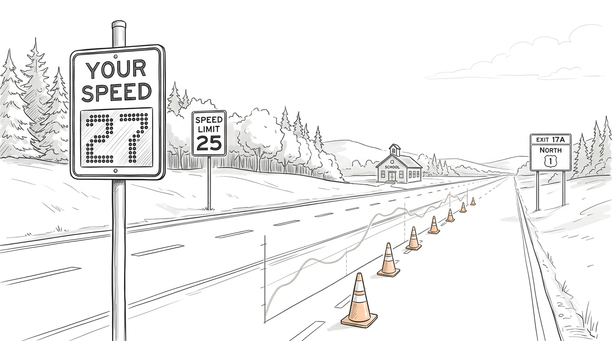

Speed Feedback Message Signs study in Maine
Statewide project scope visible while remaining honest about the mapped subset currently loaded.

Project framing
Speed Feedback Message Signs are being examined across Maine as a practical speed-management and safety-support tool.
Suggested sections for your final research site
- Project background and why SFMS matters in Maine.
- Map of sign locations, grouped by field-visit route.
- Site inventory table with coordinates and visit order.
- Methodology, before-after speed analysis, and findings.
- Photos, installation status, and future engineering recommendations.
Interactive Maine site map
Click a marker or a site row to inspect a location. Use the filters to narrow the current KML subset.
Selected site
This panel will show the site name, inferred trip group, visit order, and coordinates.
Loaded site list
Trip-group distribution
Counts are based on the currently loaded KML point locations.
How the current grouping works
The current KML uses repeated visit numbering, so this page automatically creates a new trip group each time the numbering resets.
Site inventory table
This table is generated directly from the KML and is useful for presentations, and quick QA checks.
| # | Site name | Trip group | Visit order | Latitude | Longitude |
|---|
Suggested project workflow section
Document all SFMS locations, roadway context, roadway class, and installation status across Maine.
Use site visits, photos, and sign condition checks to verify placement, visibility, and operational context.
Add before-after speed, speed reduction, compliance, and possible crash-related metrics when analysis is ready.
Summarize where SFMS appears most promising and how Maine agencies can prioritize future implementation.
GitHub Pages notes
This page is designed as a single static HTML file plus KML file and the project image.
- Create a GitHub repository.
- Upload index.html, DSFS_SiteVisitMap.kml, and project-photo.png.
- Go to Settings → Pages.
- Select the branch and root folder.
- Publish the site.
- Change the statewide total in the PROJECT.totalProjectSites constant.
- Statewide file when all 92 locations are available.
- Another photo later.
- Insert results section after complete the speed analysis.